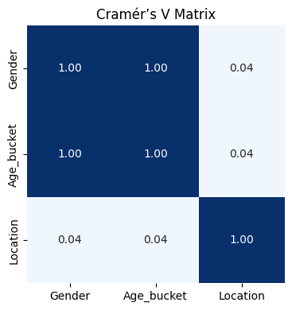

Found 77 CVs with CV_text_anon < 300 chars. Showing up to 10:
1. ID 7560889: 263 chars
2. ID 7456101: 29 chars
3. ID 7437776: 279 chars
4. ID 7414638: 110 chars
5. ID 7373536: 58 chars
6. ID 7364629: 202 chars
7. ID 7347338: 82 chars
8. ID 7330315: 237 chars
9. ID 7230306: 238 chars
10. ID 7163148: 253 chars
Example full CV for ID 6562147:
'CV anonimizzato:\n"""\nINFORMAZIONI DI\nIndirizzo : Via Kuliscio\n"""'
CVs with under 300 characters: 77 out of 7769 total
That is 0.99% of all cvs
CVs -> Original rows: 7769
CVs -> Dropped rows: 77 (IDs in provided list)
CVs -> Remaining rows: 7692
CVs with repetitive CVs: 39 out of 7692 total
That is 0.51% of all cvs
CVs -> Original rows: 7692
CVs -> Dropped rows: 39 (IDs in provided list)
CVs -> Remaining rows: 7653
4. Text Quality Checks
To further ensure we filter out “bad” or malformed CVs, we will perform:
Token & Vocabulary Richness
Calculate the unique words / total words ratio to measure lexical variety.
Filter out CVs with very low number of unique words (e.g < 20) or very low ratio (e.g. < 0.2).
Detect Redacted‐Placeholder Tails
Flag any CV whose text ends with a long run of the same character (e.g. “XXXXXXXXXX…”), seen after manual inspection. These indicate fully redacted templates with no usable content and should be excluded.
Detect Garbled/Corrupted CVs
Compute the fraction of “unusual” characters (outside printable ASCII, Latin-1, or standard punctuation) in each CV. Flag and remove any CV where this fraction exceeds a small threshold (e.g. 3%), catching heavily garbled or control-code–laden documents.
These additional checks will help us catch CVs that are too short, overly repetitive, structurally invalid, or otherwise unfit for reliable parsing and downstream analysis.
Token & Vocabulary Richness
sparse_cvs = detect_vocab_sparsity( raw_cv_cleaned, text_col="CV_text_anon", min_words=30, min_ttr=0.3)print(f"CVs to discard based on vocabulary sparsity: {sparse_cvs.height}")display( sparse_cvs.select(["CANDIDATE_ID", "total_words", "unique_words", "ttr"]).sort( pl.col("ttr"), descending=False ))
CVs with low lexical variety: 48 out of 7653 total
That is 0.63% of all cvs
CVs -> Original rows: 7653
CVs -> Dropped rows: 48 (IDs in provided list)
CVs -> Remaining rows: 7605
Detect Redacted‐Placeholder Tails
placeholder_cvs = filter_placeholder_tails( raw_cv_cleaned, text_col="CV_text_anon", char="X", min_run=20)print(f"Found {placeholder_cvs.height} CVs with trailing X placeholders:")display(placeholder_cvs.select(["CANDIDATE_ID"]))
CVs with trailing X placeholders: 52 out of 7605 total
That is 0.68% of all cvs
CVs -> Original rows: 7605
CVs -> Dropped rows: 52 (IDs in provided list)
CVs -> Remaining rows: 7553
CVs with corrupted symbols: 14 out of 7553 total
That is 0.19% of all cvs
CVs -> Original rows: 7553
CVs -> Dropped rows: 14 (IDs in provided list)
CVs -> Remaining rows: 7539
5. Translation Completeness
Filter Out Poor Translations
Compute len_ratio = len(Translated_CV) / len(CV_text_anon) and flag any CV with len_ratio < 0.7 (e.g. single-character outputs or garbled text) or an empty/missing translation.
Since these cases are very rare, we drop them outright instead of attempting a fallback or re-translation.
CVs with low translation completeness: 18 out of 7539 total
That is 0.24% of all cvs
CVs -> Original rows: 7539
CVs -> Dropped rows: 18 (IDs in provided list)
CVs -> Remaining rows: 7521
We ran our language‐detection check on the ItalianCV_text_anon and found 155 records flagged as “not Italian.”
Since our downstream analysis relies exclusively on the English translations, we’re not going to drop these files. Instead, we will now verify that the Translated_CV column truly contains English text before proceeding with bias and skill‐extraction analyses.
not_italian_df = ( raw_cv_cleaned.with_columns( [ pl.col("CV_text_anon") .map_elements(lambda s, *_: not is_this_language(s or"", "it"), return_dtype=pl.Boolean, ) .alias("not_italian") ] ) .select(["CANDIDATE_ID", "CV_text_anon", "not_italian"]) .filter(pl.col("not_italian")))print(f"Found {not_italian_df.height} CVs not in Italian.")display(not_italian_df.head())
Found 153 CVs not in Italian.
shape: (5, 3)
CANDIDATE_ID
CV_text_anon
not_italian
i64
str
bool
7931173
"CV anonimizzato: """ PERSONAL …
true
7927173
"CV anonimizzato: """ PER…
true
7926185
"CV: """ E U R O P E A N C U R …
true
7734475
"CV anonimizzato: """ Content D…
true
7560905
"CV anonimizzato: """ PROFILE L…
true
print("Sample CVs not in Italian:")print(not_italian_df.sample(1)["CV_text_anon"].item())
Sample CVs not in Italian:
CV:
"""
EDUCATION
Liceo E. Fermi (Cantù – Italy)
Diploma: “Maturità scientifica” completed in 1984.
WORK EXPERIENCE
April 2016
-
Present
Adotta : company leader in the market for production of office furniture (Partition walls/ furniture and equipped workstation).
Position: Sales Manager , in charge of Foreign Customers, managing 7 resources, Based in Washington DC office. Main Duties:
Definition of export strategies and sales plans;
Consolidation of exiting relationships with customer in American, Canada, Central America and South American markets;
Management of communication flows with the customer for information on various orders and their progress;
Accurate assessment of internal and external logistics for the organization of shipments, resolution of issues concerning goods delivery.
December 2015
-
March 2016
IVM S.p.A.: company leader in the market for production of office furniture (Partition walls/ furniture and equipped workstation).
Position: Export Manager.
October 1999
-
November 2015
Citterio S .p.A. ( Molteni & C. SPA group): company leader in the production of office furniture (Partition walls/furniture and equipped workstations).
Positions: Export Manager, in charge of Italian and Foreign Customers, managing three resources. Main duties:
Definition of export strategies and sales plans;
Fostering relationships with major customers, distributors and agents;
Consolidation of existing relationships with customers in the European, American, Asian, Middle-Eastern and Australian markets, providing them with the necessary technical and commercial assistance;
Creation and organization of a network of agents and dealers, providing the necessary support and training
Control of customer credit lines and any guarantees required;
Management of communication flows with the customer for information on various orders and their progress;
Accurate assessment of internal and external logistics for the organization of shipments, resolution of issues concerning goods delivery.
September 1994
-
September 1999
All Over S.r.l. designs studio for printed fabrics
Position: Sales Manager. Main duties:
excellent experience in entertaining relationships with major Italian customers;
opening new markets in the Middle and Far East, increasing the development and growth of the turnover;
Consolidation of relations with existing customers in the European, American markets, providing them with the necessary technical and commercial assistance;
Creation and organization of a network of agents and dealers, providing the necessary support and training.
February 1992
-
September 1994
Elle 2 S.r.l. designs studio for printed fabrics
Position: Area Manager for the Italian, European and Japanese markets.
Until
February 1992
Sales agent for publishing products and software.
FOREIGN LANGUAGES
English (fluent), Spanish (fluent), French (good).
COMPUTER SKILLS
Good experience in computer use and knowledge of the most used office automation softwares (Windows 10, MS Word , MS Excel, MS Power Point, AS400, AutoCAD 2015) .
OTHER
SKILLS
Excellent suitability to human co ntacts and teamwork.
Flexibility and orientation to problem solving.
Ability to work on targets and in stressful situations.
"""
not_english_df = ( raw_cv_cleaned.with_columns( [ pl.col("Translated_CV") .map_elements(lambda s, *_: not is_this_language(s or"", "en"), return_dtype=pl.Boolean, ) .alias("not_english") ] ) .select(["CANDIDATE_ID", "Translated_CV", "not_english"]) .filter(pl.col("not_english")))print(f"Found {not_english_df.height} CVs not in English.")display(not_english_df.head())
Found 16 CVs not in English.
shape: (5, 3)
CANDIDATE_ID
Translated_CV
not_english
i64
str
bool
7546519
" gender male birthdate 18/10/1…
true
7292989
" work experience 10/15/2015 – …
true
7282933
" f o r m a t o e u r o p e o p…
true
7130948
" professional experience ener …
true
6871809
" experience bartender/barista …
true
print("Sample CVs not in English:")print(not_english_df.sample(1)["Translated_CV"].item())
We ran our check on the Translated_CV column and found only 16 records flagged as non-English. After a manual review, we discovered that these CVs are indeed written in English but include many Italian place names, addresses and organization titles which skew the language detector’s statistics. Since the underlying text is English and these cases are few, we will not drop them.
Note: going forward, all regex or pattern-based quality checks should be applied only to the EnglishTranslated_CV field.
6. Handling Empty CV Records
During our inspection we found many corrupted CVs. In each dedicated section, to ensure data quality and consistency across all our analyses, we will:
Exclude their parsed skills
Filter out any rows in our parsed skills DataFrame (cv_skills) corresponding to those same CANDIDATE_IDs.
Omit their entries in the Reverse Matching results
Drop records in the Reverse Matching dataset (ReverseMatching.xlsx) for those candidate IDs.
This cleanup step prevents entirely missing CVs from biasing our skill‐extraction and matching analyses.
2. Parsed Skills (the cv_skills DataFrame that feeds the matcher)
Exclude parsed skills of the candidates with corrupted CVs.
raw_cv_ids = raw_cv.select(pl.col("CANDIDATE_ID")).to_series().to_list()print("Number of CVs loaded ->", len(raw_cv_ids))raw_cv_cleaned_ids = raw_cv_cleaned.select(pl.col("CANDIDATE_ID")).to_series().to_list()print("Number of CVs kept after cleaning ->",len(raw_cv_cleaned_ids),)raw_cv_deleted_ids = ( raw_cv.filter(~pl.col("CANDIDATE_ID").is_in(raw_cv_cleaned_ids)) .select(pl.col("CANDIDATE_ID")) .to_series() .to_list())print("Number of CVs deleted ->",len(raw_cv_deleted_ids),)
Number of CVs loaded -> 7769
Number of CVs kept after cleaning -> 7521
Number of CVs deleted -> 248
raw_skills_cleaned = filter_out_candidate_ids( raw_skills, raw_cv_deleted_ids, df_name="Skills", description="CVs deleted")################### Sanity check on the new number of unique candidate IDs.total_rows = raw_skills_cleaned.heightunique_ids = raw_skills_cleaned.select(pl.col("CANDIDATE_ID")).unique().heightprint(f"Unique CANDIDATE_ID: {unique_ids}")
Skills with CVs deleted: 4086 out of 132985 total
That is 3.07% of all skills
Skills -> Original rows: 132985
Skills -> Dropped rows: 4086 (IDs in provided list)
Skills -> Remaining rows: 128899
Unique CANDIDATE_ID: 7521
Inspecting missing values we’ve found that 82 rows are missing a Skill value. Diving into the data, we see that these rows are all associated with the value DRIVERSLIC in the Skill_Type column. This indicates that these rows are likely placeholders for driver license information, which is however useful to our analysis. We will not drop these rows from the dataset.
Total rows: 128898
Unique (ID, Skill, Skill_Type): 128898
No duplicates found—skipping deduplication.
4. Validate Skill Types
Ensure Skill_Type only takes one of your known categories (IT_Skill, Job_title, Language_Skill, Professional_Skill, DRIVERSLIC).
VALID_TYPES = ["IT_Skill","Job_title","Language_Skill","Professional_Skill","DRIVERSLIC",]all_types = raw_skills_cleaned.select("Skill_Type").unique().to_series().to_list()invalid_types = [t for t in all_types if t notin VALID_TYPES]##############if invalid_types:print("Found invalid Skill_Type values:")for t in invalid_types:print(" -", t)else:print("All Skill_Type values are valid.")
All Skill_Type values are valid.
5. Filter Out Garbage Skill Tokens
Drop any Skill entries that are obviously malformed (e.g. length < 2 or > 100, only punctuation or digits).
Optionally remove entries matching placeholder patterns (like a long run of X).
reversed_skills_matching = filter_out_candidate_ids( reversed_skills_matching, raw_cv_deleted_ids, df_name="Reverse Matchhing Candidates", description="CVs deleted",)################### Sanity check on the new number of unique candidate IDs.total_rows = reversed_skills_matching.heightunique_ids = reversed_skills_matching.select(pl.col("CANDIDATE_ID")).unique().heightprint(f"Unique CANDIDATE_ID: {unique_ids}")
Reverse Matchhing Candidates with CVs deleted: 248 out of 7769 total
That is 3.19% of all reverse matchhing candidates
Reverse Matchhing Candidates -> Original rows: 7769
Reverse Matchhing Candidates -> Dropped rows: 248 (IDs in provided list)
Reverse Matchhing Candidates -> Remaining rows: 7521
Unique CANDIDATE_ID: 7521
After classifying candidates as North, Center, or South by latitude, we select the columns of interest and examine their inter-correlations to decide which ones to analyze next.
To find inter correlations, we compute a square matrix whose (i, j) entry is the Cramér’s V between column i and column j in reversed_skills_matching. (computed with polars-ds)
It normalises the χ² test of independence to the range [0, 1]:
\[
V \;=\; \sqrt{\frac{\chi^{2}}{\,n\bigl(k_{\min}-1\bigr)}}
\]
where
χ² is the chi-square statistic,
n is the number of rows,
\(k_{\min}\) is the smaller of the two variables’ unique value counts.
Thus V = 0 means no association, V = 1 means a perfect link.
Attention!
The heat-map reveals a striking finding: Age Bucket and Gender are perfectly correlated (Cramér’s V = 1.0).
Since either variable fully determines the other, we will keep only one in subsequent analyses to avoid redundancy.
plot_cramer_matrix(cramer_matrix)

The tables below makes this explicit: every female candidate is aged 55 – 74, while every male candidate is aged 25 – 34.